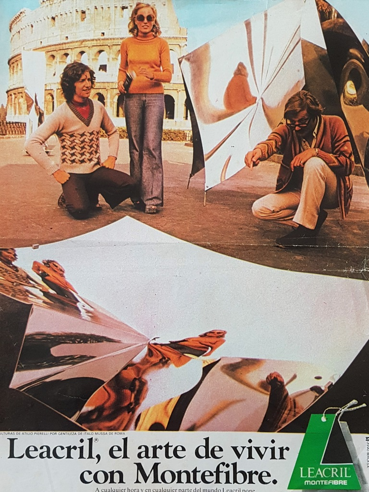
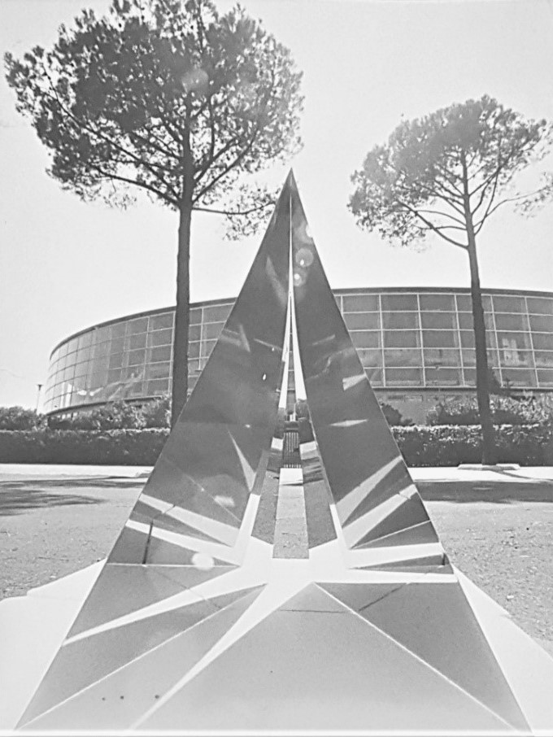
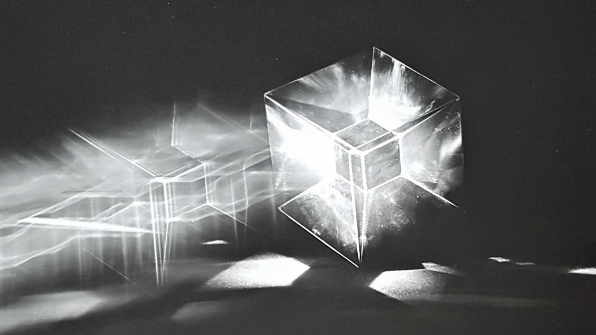

valutazione estetica
Uno scienziato degno di questo nome,
prova lavorando la stessa impressione di un artista;
la gioia che gli dà il suo lavoro
è altrettanto grande e della medesima natura
premessa storica
All'inizio della seconda metà del Novecento, nel panorama artistico internazionale cominciano a vedersi i chiari sintomi di un profondo cambiamento. I protagonisti, i movimenti e gli elementi finora cardini iniziano ad apparire come i vecchi strumenti di un presente diventato ormai passato, e sembrano addirittura ostacolare quella pressante esigenza d’immersione totale dell’arte nella vita che si stava demarcando sempre più in quegli anni.
Senza gerarchie restrittive, l’arte comincia così ad estendere a qualsiasi materiale la possibilità di creare forme, distaccandosi dalla tradizionale idea che tecnica e materiali impiegati forniscano di per sé un giudizio a priori circa il valore di un’opera e tendendo invece a penetrare attivamente nello spazio dell’osservatore avvalendosi di strumenti fino ad allora estranei al linguaggio artistico più tradizionale. Tale propensione, che raggiungerà una diffusione a livello internazionale negli anni Sessanta, porterà gli artisti a servirsi di ogni innovazione tecnico-materica del loro tempo e ad inserirla legittimamente nei processi lavorativi delle proprie espressioni poetiche, creando così "oggetti" difficilmente classificabili all’interno dei generi artistici convenzionali. In questa innovativa direzione, rivoluzionaria è stata soprattutto l’evoluzione della scultura e della concretizzazione del suo legame con la contemporaneità.
In Italia, a partire dagli anni Sessanta, le poetiche parallele alla scultura si svilupparono secondo traiettorie discontinue, divenendo il più delle volte episodi isolati e di difficile ricostruzione evolutiva. Eppure, fu proprio grazie a questa conclamata non univocità che tali poetiche cominciarono a divenire fonte d’ispirazione e d’incoraggiamento per le nuove generazioni. L'incremento di voci e di esperienze così alternative e diversificate porterà a sua volta alla ri-scoperta dello Spazio nella totalità di tutte le sue accezioni possibili ed attraverso l’utilizzo di ogni tipologia di mezzi e “strumenti” donati dalla modernità.

Le sculture di Attilio Pierelli in un inserto pubblicitario della Leacril (anni 60')
«Nel considerare le trasformazioni verificatesi nell’arte d’oggi non è possibile prescindere da un’occhiata, almeno, rivolta al mondo che ci circonda, all’attuale aspetto della nostra civiltà: come non tener conto della necessaria interdipendenza tra arte e industria, tra l’arte e la scienza, tra l’arte e la linguistica? Come pretendere che l’artista possa continuare a creare non tocco da quello che vede e sente di continuo attorno a sé e che per la maggior parte è costituito non già da elementi “naturali”, come nei tempi antichi, ma da elementi artificiali?»
La tendenza, sempre più forte, verso la dimensione plastico-spaziale inizia ad andare di pari passo con una tendenza alla sintesi. Le opere cominciano a venir eseguite tramite l’impiego dei macchinari dell’industria oppure vengono destinate ad essere seriate come un prodotto industriale qualunque. Il repertorio artistico che viene creandosi va così a comporsi di elementi naturalistici artificiali, a metà strada fra civiltà dell’immagine e civiltà della tecnologia; improvvisa nuovi paesaggi e inedite dimensioni, costruendo quasi una «seconda natura».
Come avrebbe detto Lewis Mumford (1895 - 1982) nel suo monumentale scritto La città nella storia, si cerca così di conciliare Prometeo (l’uomo della scienza e della tecnica) con Orfeo (colui che attraverso l’arte addomestica la natura). All’interno di questa nuova realtà l’arte però non viene vista come un tentativo di salvare il mondo dal fare alienante della tecnologia industriale o come un suggerimento di rivisitazione della stessa, bensì come una celebrazione della sua autosufficienza: il suo messaggio resta inalterato nel tempo nonostante il perpetuo cambiamento di forma, linguaggio, consistenza e, appunto, immagine.
Facendo convivere la dimensione delle idee con quella del pensiero, comincia a farsi strada nell’artista del tempo una nuova adesione alla ragione, e da un procedere per convinzioni si passa ad un procedere per tentativi. Non si tratta più di riproporre modelli canonici, né di imporre programmi o progetti indubitabili, ma di affermare una ragione nuova, diversa, che prosegue proprio perché continua a immaginare. E proprio immaginando azzarda - intuisce! - supera e dichiara l’instabilità del precostituito, facendo coesistere la determinazione con l’indeterminazione generata dalla complessità che ci circonda, ma che non per questo sceglie la trasversalità degli stili. Le dimensioni create dall’incertezza vengono affrontate con la disponibilità a modificare anche le proprie convinzioni senza che questo vada a significar il non aver alcuna sicurezza. Si sceglie ora di proseguire lungo una determinata strada in maniera razionale, ma con la consapevolezza di non basarsi su verità certe. Si punta a moltiplicare la possibilità del vedere e del percepire, partendo dal presupposto che «guardare un’opera d’arte implichi sempre l’attivazione di un processo di apprendimento per tentativi che è al tempo stesso un processo di accumulazione del sapere, nonché la capacità di rispondere ai cambiamenti dell’ambiente modificando la propria personalità e aumentandone la complessità». Ragione e azzardo divennero dunque le direttrici determinanti del lavoro di una precisa area dell’esperienza artistica di quel periodo a cavallo tra gli anni Sessanta e Settanta del Novecento, periodo in cui l’opera d’arte non chiedeva più un’attenzione fondata su regole, ma una percezione rivelatrice di sé stessa, nel dominio della propria sensibilità. Tra gli artisti italiani che percorreranno questa direzione ci sarà - anche e soprattutto - Attilio Pierelli, che farà parte di quella linea più avanzata, rappresentativa ed innovatrice della scultura italiana del secondo Novecento.

Progetto del monumento All’Era Spaziale di Attilio Pierelli Roma, 1976una poetica tra arte e scienza
«Forse la scultura, più di tutte le arti, ha dato la sensazione dell’evoluzione in atto, sotto certi aspetti oscura e misteriosa, del potere dell’uomo sulla materia per la capacità che gli è stata data di spalancare nuovi campi alla conoscenza. Ma il potere fisico [...] non è mai disgiunto da quello dell’uomo di aprire l’angolazione all’infinito della sua fantasia, quando dal piano della conoscenza e della tecnica passa a quello estetico mediante una illuminazione a lampi improvvisi di intuizione».
L’arte di Attilio Pierelli fu, per certi versi, un’arte antirazionale: fatta di visioni improvvise e di pure illuminazioni, ma che trovò nei simboli e nelle teorie scientifici il suo massimo grado di espressione. La ricerca condotta per il raggiungimento di tali obiettivi fu lunga e multidisciplinare, ma pur sempre ispirata dalla fondamentale “costante” della sua primitiva intuizione. La sua opera è stata la prova evidente che il rapporto tra arte e scienza non è soltanto possibile ma, soprattutto, necessario per continuare a tendere verso la conoscenza delle molteplici “dimensioni” dell’esistenza.
Pierelli fu un vero fuoriclasse dell’arte scultorea internazionale e le sue opere lo dimostrano in maniera tangibile: immagini regolari ma contemporaneamente soggette ad una persistente trasformazione, sculture auto-musicali che variano il loro suono in base all’ambiente, alla prospettiva dalla quale vengono osservate e all’angolazione della luce che le colpisce; sono tutti oggetti che raccontano - ciascuno in maniera diversa - quella che fu l’originale intuizione del loro creatore. L’artista riuscì ad accostare, paragonare ed infine combinare il rigore scientifico con la capacità dell’immaginazione, offrendone poi la sintesi completa all’osservatore. Egli trovò nella scultura lo strumento di indagine ideale per la sperimentazione, in forma concreta, delle innovazioni generate dalla fisica moderna e riuscì quindi ad ottenere risultati plastici inediti sia nella visualizzazione della quarta dimensione geometrica, che nel campo delle geometrie curve non euclidee che sulle conoscenze topologiche riguardanti le superfici estremali.
Con le sue sculture, Pierelli sondò un’infinità di dimensioni, e trasformò un materiale sterile come l’acciaio in un lucido e fecondo recettore di segni, convertendolo a icona dell’infinità del tempo e dello spazio e mettendoci così illusivamente in contatto con il divenire della nostra dimensione e della sua moltiplicazione speculare. Ma la cosa più straordinaria in assoluto è che l’artista riuscì in tale impresa senza il bisogno di ricorrere ad alcun progetto, ma bensí concretizzando visivamente cose e fenomeni che, fino ad allora, gli scienziati non ritenevano rappresentabili se non con mezzi e formule scientifiche: il perno attorno al quale ruotò tutta la sua indagine fu l’ iperspazio che, come sappiamo, non può essere percepito, ma soltanto immaginato "realizzato". Le sue “intuizioni materiche”, generate da concetti geometrici, cosmologici, fisici e metafisici, ebbero dunque come obiettivo principale la scoperta e la conoscenza di realtà spaziali “altre”.

La scultura Ipercubo di Attilio Pierelli in una foto di Pino Abbrescia
L’intento di Pierelli fu quello di provare ad avvicinare l’umanità alla conoscenza totale di questo mondo, che rimane essenzialmente ancora puro fenomeno, apparenza inconoscibile nella propria verità. Ed essendo la mente umana, per lo scultore, il vero “maestro” dell’uomo, unico capace di trascendere le tre dimensioni, ogni volta che concepiva un’opera, si ripresentava il problema di come renderla comprensibile non soltanto da chi avesse una preparazione artistica e scientifica, ma, per quanto la cosa potesse risultare ardua e complessa, da chiunque fosse interessato anche solo ad osservarla, attraverso quello che egli chiamava «plesso solare», ovvero l'emozione che si prova nel vedere un qualcosa d'istinto, senza logica alcuna.
Egli si servì delle sue creazioni per giungere alla conoscenza di nuove dimensioni e per incitare l’osservatore a fare lo stesso, rendendo l’immaginazione parte integrante della logica e mettendo in contatto diretto tutte le infinite e possibili relazioni che intercorrono tra lo sguardo e lo spazio. Riuscendo ad unire le conoscenze scientifiche alla sensibilità artistica, Pierelli dimostrò di possedere un ingegno pari a quello dei più grandi maestri dell'Umanesimo.